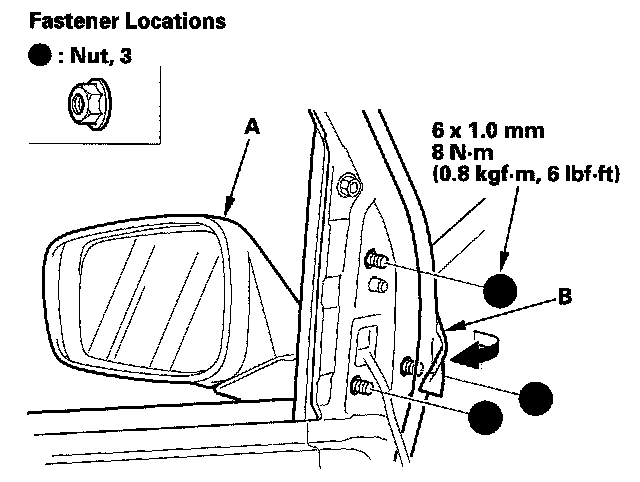
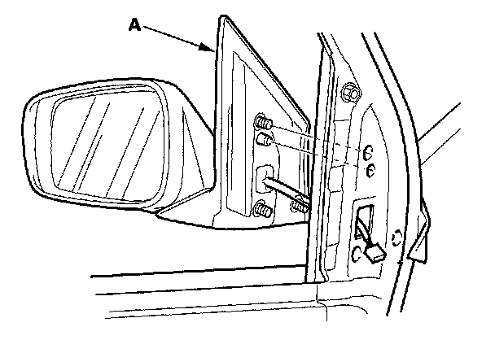

Power Mirror
Power Mirror Replacement1. Lower the door glass fully.
2. Remove these items:
- Front door panel
- Front door sash inner trim

3. While holding the mirror (A), pull back the door weatherstrip (B) as needed, then remove the nuts.

4. Remove the mirror (A). Take care not to scratch the door.
5. Install the mirror in the reverse order of removal.